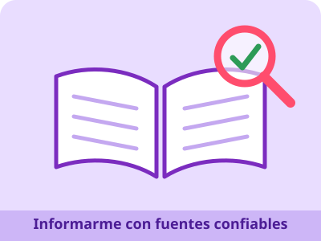

🏠 Inicio | 💚 Autocuidado | 🛡️ Prevención | 🌈 Derechos | 📚 Fuentes confiables

En internet cualquiera puede publicar cualquier cosa. Por eso, antes de creer o compartir una información, conviene comprobar de dónde viene. Estas preguntas ayudan:
🌍 Organización Mundial de la Salud (OMS): organismo de la ONU para la salud. Se usó para datos de salud adolescente y actividad física. Artículo: Ha llegado el momento de invertir en los adolescentes.
🌎 Organización Panamericana de la Salud (OPS): datos sobre las muertes de adolescentes que se pueden prevenir.
🏥 Ministerio de Salud Pública del Ecuador: autoridad de salud del país; información sobre servicios y programas.
🧒 UNICEF Ecuador: trabaja por los derechos de la niñez y la adolescencia. Se usó para la Convención sobre los Derechos del Niño y sus cuatro principios.
📜 Constitución de la República del Ecuador (2008): documento legal principal del país; se consultaron los artículos 11, 44 y 45.
🧠 Infocop: medio del Consejo General de la Psicología de España; resume los datos de la OMS sobre salud mental adolescente.
Si dudas de una información, pregunta a un docente, a tu familia o al personal de un centro de salud. Informarse bien también es una forma de cuidarse y de respetar a los demás.
Página creada por Wilmer Parco · Proyecto Interdisciplinario